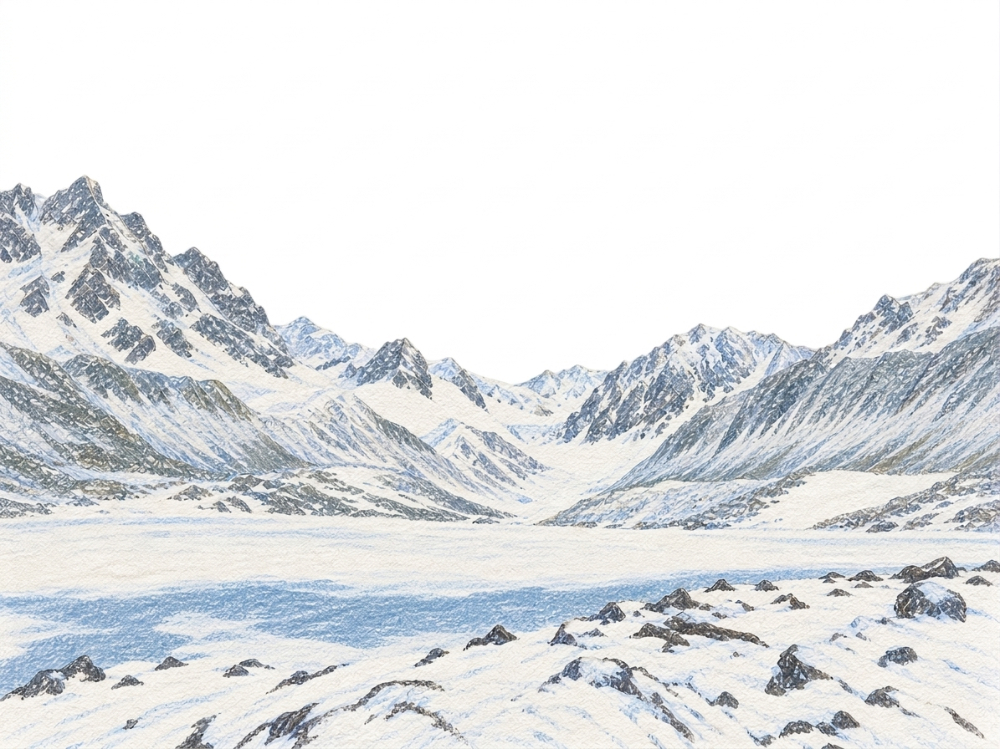
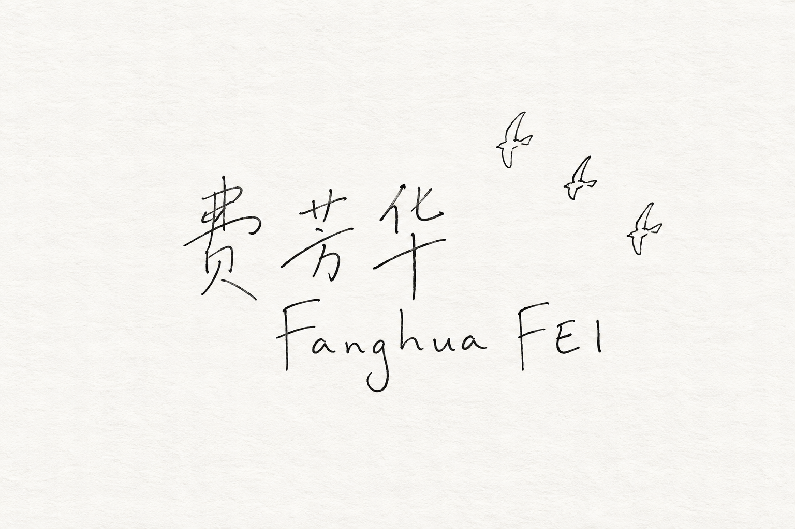
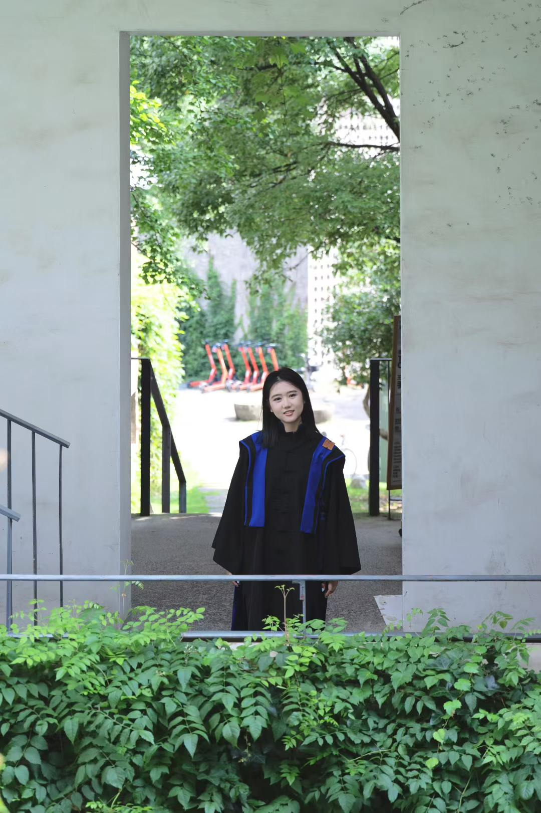
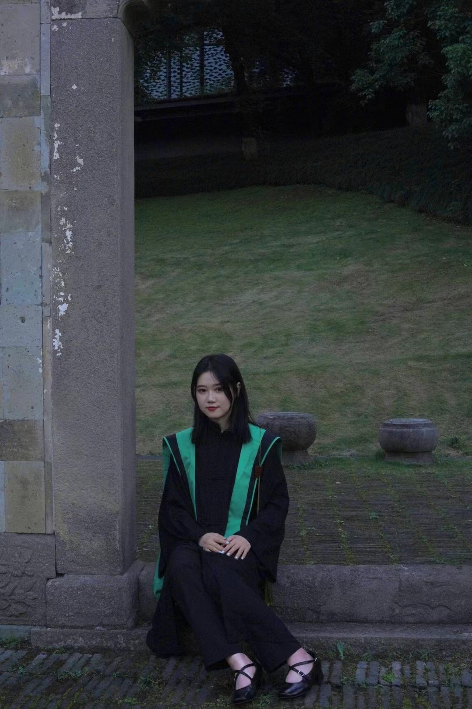
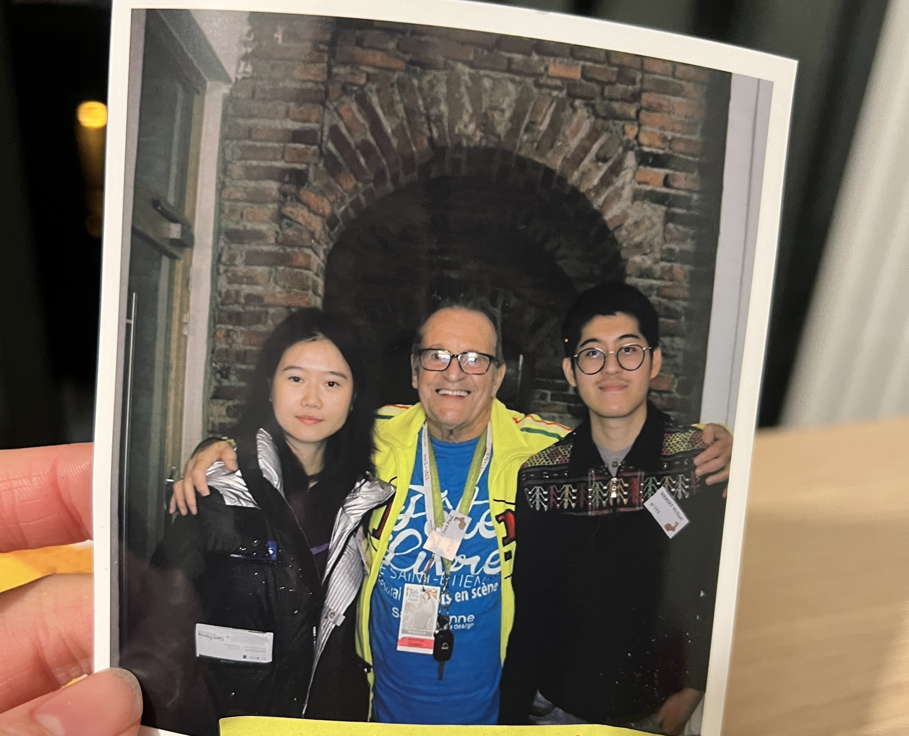
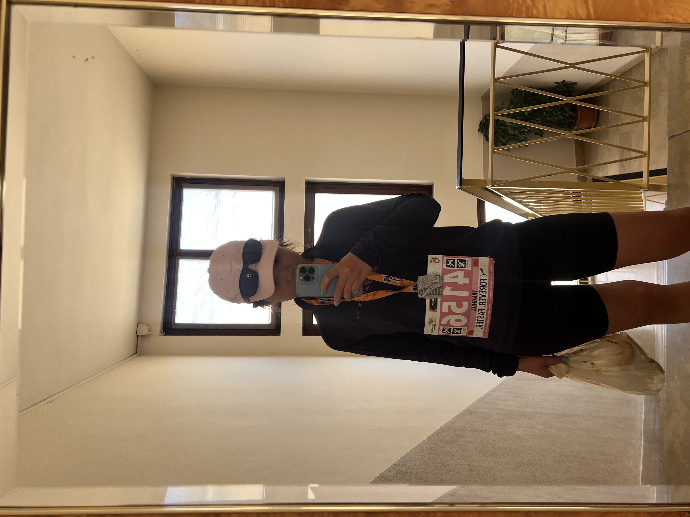
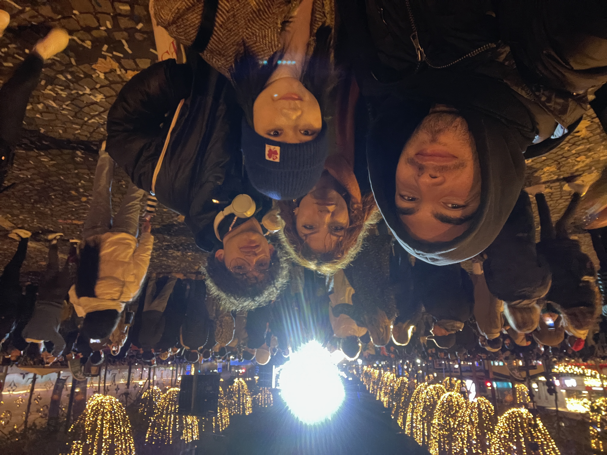
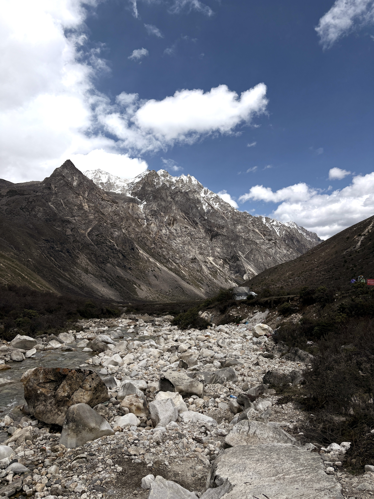
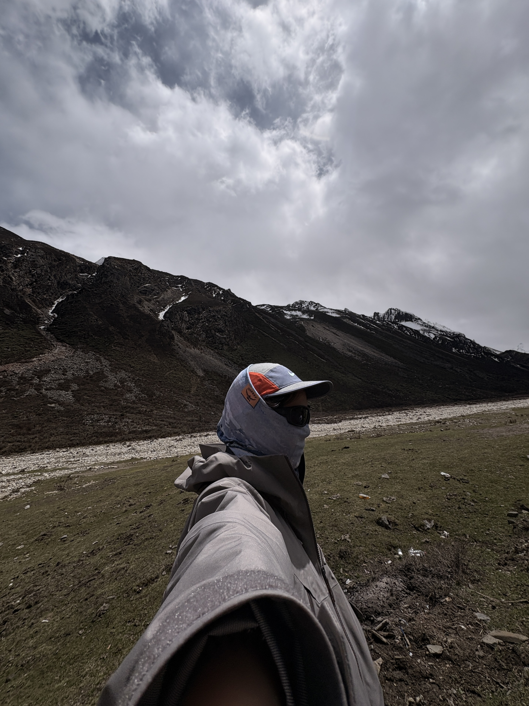

2017.09 — 2022.06
中国美术学院
本科 · 建筑学 · GPA 4.27 / 5
核心课程：设计基础、建筑设计及理论、城市设计及理论、批判性社会学、空间设计、现象学、设计与实践。


FEI
PORTFOLIO
ARCHITECTURE · ART · OBJECTS
PERSONAL ARCHIVE / 2026
你好，欢迎来到我的网站。 我本科与硕士均就读于中国美术学院（CAA）建筑学专业，研究生期间曾赴法国圣埃蒂安艺术与设计学院（ESADSE）交流半年，学习空间设计与产品设计。我的兴趣从空间延伸到日常物件、手工创作与影像表达，喜欢观察生活中的细节，也享受把想法变成具体作品的过程。
毕业后，我在一家室内设计公司工作了一年，并在半年内参与完成了一套完整样板间的落地。从方案设计、图纸表达，到硬装、软装及家具设计，这段全流程的实践，让我积累了推进项目、协调细节与实现创意的经验。
我有较强的动手能力，喜欢探索不同材料与制作方式，擅长钩针、刺绣等手工创作。摄影与视频也是我记录和表达的方式；交换期间，我走访了 11 个国家，用镜头记录建筑与人文，并拍摄、剪辑了一系列 Vlog。







2017.09 — 2022.06
本科 · 建筑学 · GPA 4.27 / 5
核心课程：设计基础、建筑设计及理论、城市设计及理论、批判性社会学、空间设计、现象学、设计与实践。
2024.09 — 2025.02
交换 · 空间设计（espace）、平面设计（graphism）
2022.09 — 2025.06
硕士 · 建筑学 · 保研 · 导师王澍
核心课程：建筑历史及实践、建筑设计更新、可持续设计实践、生土实验。
SCROLL TO CONTINUE ↓
浙江省省政府奖学金新闻中心策划部部员
中国美术学院校三等奖学金暑期前往台州仙居支教全国高校联合竞技赛志愿者
浙江省省政府奖学金被评为优秀团员校级新苗计划结题暑期龙游古民居测绘实践
中国美术学院校二等奖学金被评为优秀团干部竞技健美操队队长NS 运动社部长与队员共同组织创办运动社团校级新苗计划结题
浙江省省政府奖学金本科招生考试优秀志愿者本科招生、研究生复试、望江山疗养院志愿者参加红十字会考核并取得救护资格证“百年党史的建筑表达”主题展览优秀个人金华“江南第一家”调研
毕业创作暨林风眠创作铜奖中国美术学院思政微课比赛二等奖浙江省高校思政微课大赛复赛完全学分制宣讲活动志愿者国际设计博物馆志愿者入选杭州亚运会志愿者受聘 2022 届校友联络员青年讲师团成员中国美术学院学业奖学金校研究生学会联络部部员
中国美术学院学业奖学金亚运会优秀志愿者“创青春”第四届全国大学生乡村振兴大赛金奖
第 14 届中国大学生健美操锦标赛普通院校 A 组规定有氧踏板第一名第 15 届中国大学生健美操锦标赛普通院校 A 组规定有氧舞蹈第三名浙江省第十五届大学生运动会健美操比赛第三名第三届 SYDF 海峡两岸青年发展论坛嘉年华表演活动
参与建筑项目方案深化，协助完成设计图纸绘制及模型搭建，支持设计团队的研究工作。
全流程参与并落地招商·西安湾样板间一套，包括硬装、软装及家具落地，协助主创设计师完成室内设计全流程工作。方案设计阶段：配合完成平面布局、空间规划、效果图方案构思与优化，迭代调整设计方案。图纸深化审核：协助完成全套施工图纸绘制、细化及校对审核工作。软装定制与采购对接：负责家具、灯具、布艺、饰品等全屋软装选型、搭配与方案整合。竣工收尾工作：负责现场软装进场与整体空间氛围落地，同步整理项目资料与软装清单。
语言英语：IELTS 6.5，CET-6 / CET-4 通过；法语：具备基础法语能力
模型与设计软件Rhino、SketchUp、AutoCAD、Enscape
Adobe 系列Photoshop（PS）、Illustrator（AI）、InDesign（ID）、Lightroom（LR）、Premiere Pro（PR）
办公软件Excel、Word、PowerPoint（PPT）
从建筑空间到日常物件，记录关于尺度、材料与手感的持续实验。
建筑课程作品
Tel: +86 18888926369
Email: 1095945267@qq.com
小红书：弗贝ff